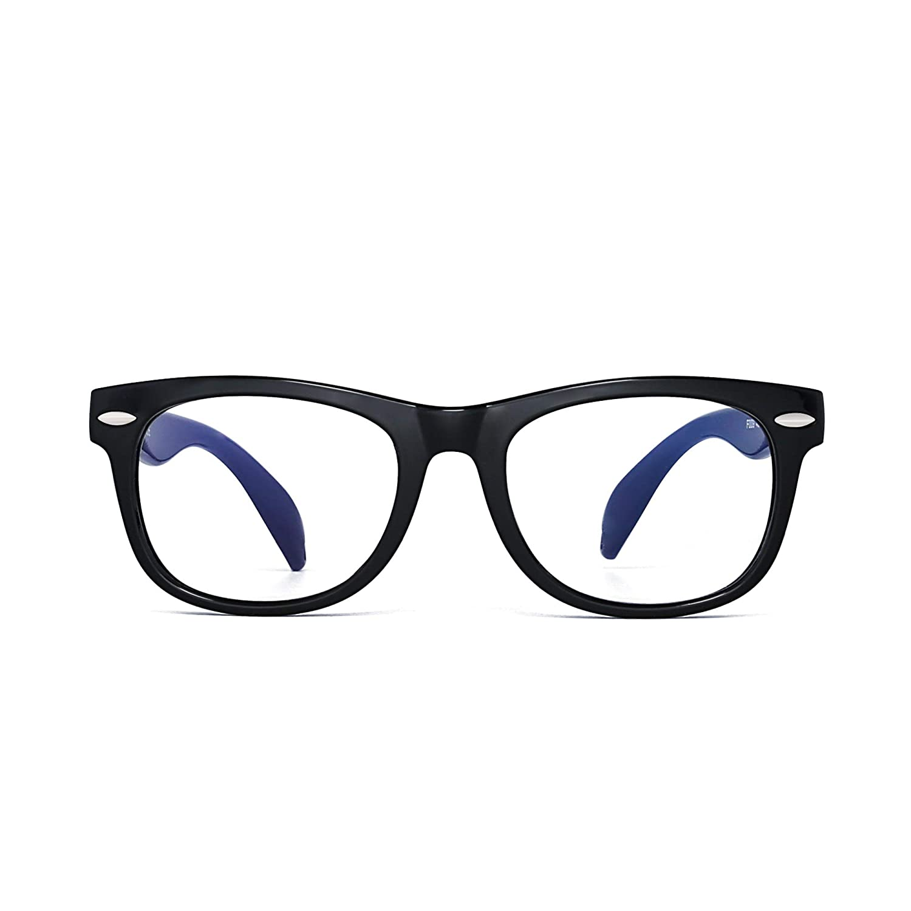
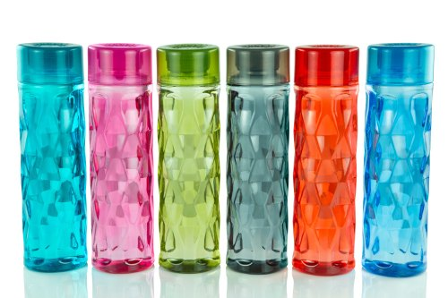

1. Test Image -
Output on Microsoft Azure -
a close up of a piece of paper
Output on mobilenet -
comic book
Result -
Mobile Net was more acuurate
2. Test Image -
Output on Microsoft Azure -
a close up of a box
Output on mobilenet -
a texutured background
Result -
Microsoft Azure was more acuurate
3. Test Image - 
Output on - Microsoft Azure
logo,company name
Output on mobilenet -
Sunglasses,dark glasses,shades
Result -
Mobile Net was more acuurate
4. Test Image -
Output on - Microsoft Azure -
An apple sitting on top of a wooden table
Output on mobilenet -
pink-pong ball
Result -
Microsoft azure was more acuurate
4. Test Image - 
Output on - Microsoft Azure -
A plastic water bottle
Output on mobilenet -
cocktail shaker
Result -
Microsoft azure was more acuurate